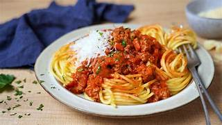

Bolognese

Description
Bolognese: A Timeless Italian Favorite
Experience the heartwarming flavors of Italy with this classic Bolognese sauce. Made with tender ground meat, rich tomatoes, and a blend of aromatic herbs,
this hearty sauce pairs perfectly with your favorite pasta. Whether for a cozy family dinner or a gathering with friends, Bolognese is a dish that brings comfort and joy to every plate.
Ingredients
- 400g spaghetti (or your favorite pasta)
- 500g ground beef (or a mix of beef and pork)
- 1 medium onion, finely chopped
- 2 medium carrots, finely diced
- 2 celery sticks, finely diced
- 2 tablespoons olive oil
- 100ml dry red wine (optional)
- 400g canned diced tomatoes
- 2 tablespoons tomato paste
- 200ml beef or vegetable stock
- 1 teaspoon dried oregano
- 1 teaspoon dried basil
- 1 bay leaf
- Salt and pepper, to taste
- Parmesan cheesse, for garnish
Steps
Step 1: Prepare the Base
- Heat the olive oil in a large pan over medium heat.
- Add the onion, carrots, and celery. Sauté for 5-7 minutes until softened.
- Add the garlic and cook for 1 minute until fragrant.
Step 2: Cook the Meat
- Add the ground beef to the pan. Cook until browned, breaking it up into small pieces with a spoon.
- If using, pour in the red wine and let it simmer for 2-3 minutes until reduced.
Step 3: Add the Tomatoes and Seasoning
- Stir in the tomato paste, cooking for 1 minute.
- Add the diced tomatoes, beef stock, oregano, basil, and bay leaf.
- Season with salt and pepper to taste. Stir well.
Step 4: Simmer the Sauce
- Lower the heat to a gentle simmer. Cover partially with a lid and cook for 45-60 minutes, stirring occasionally, until the sauce thickens and the flavors meld together.
Step 5: Cook the Pasta
- About 10 minutes before the sauce is done, bring a large pot of salted water to a boil.
- Cook the spaghetti according to the package instructions until al dente. Drain and set aside.
Step 6: Combine and Serve
- Remove the bay leaf from the sauce.
- Toss the pasta with the sauce, or serve the sauce on top of the pasta.
- Garnish with freshly grated Parmesan cheese and enjoy!/li>